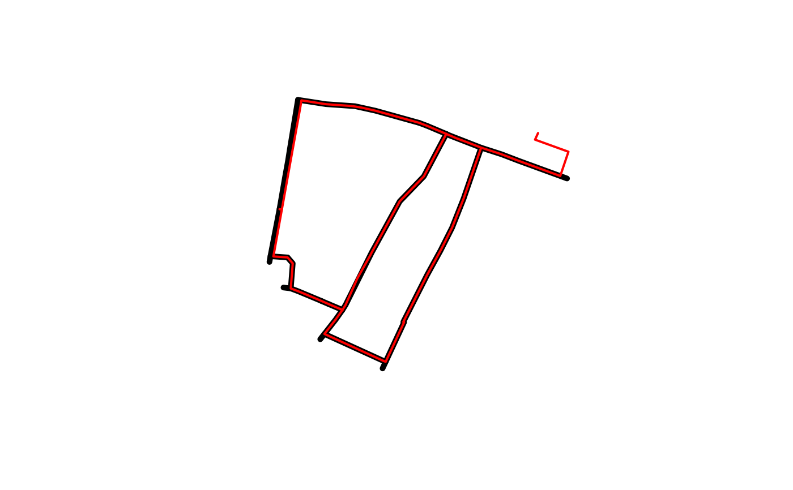
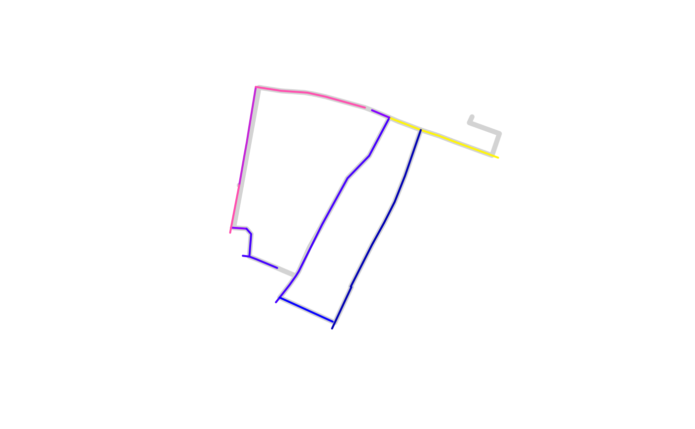
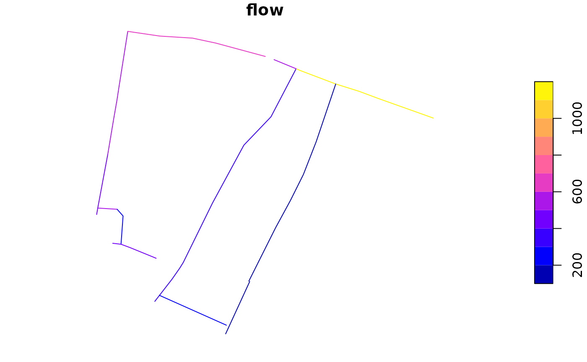

Merge route networks, keeping attributes with aggregating functions
Source:R/rnet_join.R
rnet_merge.RdThis is a small wrapper around rnet_join().
In most cases we recommend using rnet_join() directly,
as it gives more control over the results
Usage
rnet_merge(
rnet_x,
rnet_y,
dist = 5,
funs = NULL,
sum_flows = TRUE,
crs = geo_select_aeq(rnet_x),
...
)Arguments
- rnet_x
Target route network, the output will have the same geometries as features in this object.
- rnet_y
Source route network. Columns from this route network object will be copied across to the new network.
- dist
The buffer width around rnet_y in meters. 1 m by default.
- funs
A named list of functions to apply to named columns, e.g.:
list(flow = sum, length = mean). The default is to sum all numeric columns.- sum_flows
Should flows be summed?
TRUEby default.- crs
The CRS to use for the buffer operation. See
?geo_projectedfor details.- ...
Additional arguments passed to
rnet_join.
Examples
# The source object:
rnet_y <- route_network_small["flow"]
# The target object
rnet_x <- rnet_subset(osm_net_example[1], rnet_y)
#> Warning: attribute variables are assumed to be spatially constant throughout all geometries
#> Warning: repeating attributes for all sub-geometries for which they may not be constant
#> Joining with `by = join_by(osm_id)`
plot(rnet_x$geometry, lwd = 5)
plot(rnet_y$geometry, add = TRUE, col = "red", lwd = 2)

rnet_y$quietness <- rnorm(nrow(rnet_y))
funs <- list(flow = sum, quietness = mean)
rnet_merged <- rnet_merge(rnet_x[1], rnet_y[c("flow", "quietness")],
dist = 9, segment_length = 20, funs = funs
)
#> Joining with `by = join_by(osm_id)`
plot(rnet_y$geometry, lwd = 5, col = "lightgrey")
plot(rnet_merged["flow"], add = TRUE, lwd = 2)

# # With a different CRS
rnet_xp <- sf::st_transform(rnet_x, "EPSG:27700")
rnet_yp <- sf::st_transform(rnet_y, "EPSG:27700")
rnet_merged <- rnet_merge(rnet_xp[1], rnet_yp[c("flow", "quietness")],
dist = 9, segment_length = 20, funs = funs
)
#> Joining with `by = join_by(osm_id)`
plot(rnet_merged["flow"])

# rnet_merged2 = rnet_merge(rnet_x[1], rnet_y[c("flow", "quietness")],
# dist = 9, segment_length = 20, funs = funs,
# crs = "EPSG:27700")
# waldo::compare(rnet_merged, rnet_merged2)
# plot(rnet_merged$flow, rnet_merged2$flow)
# # Larger example
# system("gh release list")
# system("gh release upload v1.0.2 rnet_*")
# List the files released in v1.0.2:
# system("gh release download v1.0.2")
# rnet_x = sf::read_sf("rnet_x_ed.geojson")
# rnet_y = sf::read_sf("rnet_y_ed.geojson")
# rnet_merged = rnet_merge(rnet_x, rnet_y, dist = 9, segment_length = 20, funs = funs)